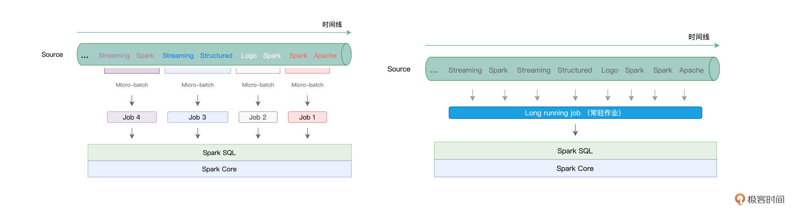
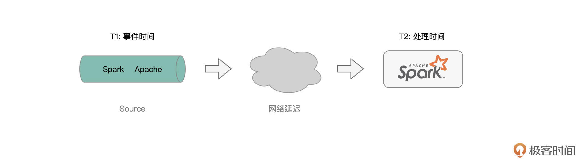
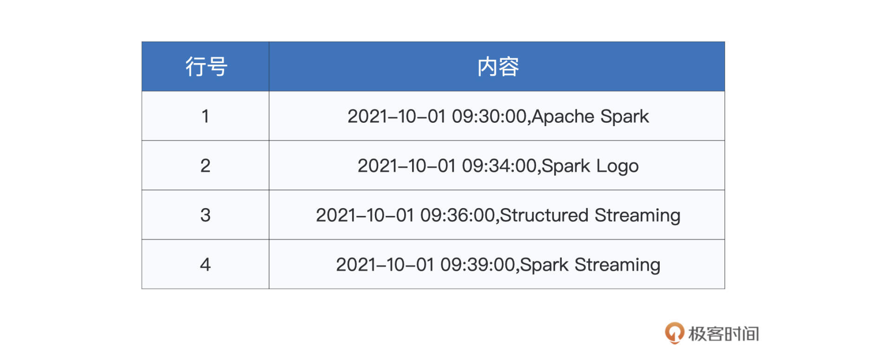
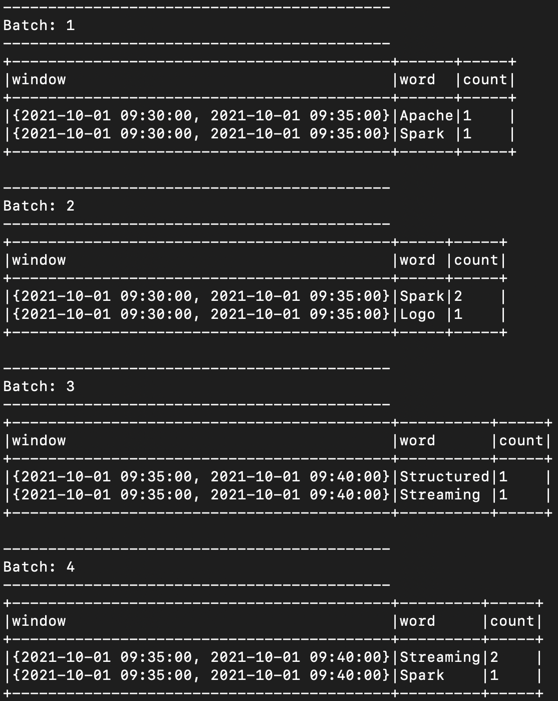
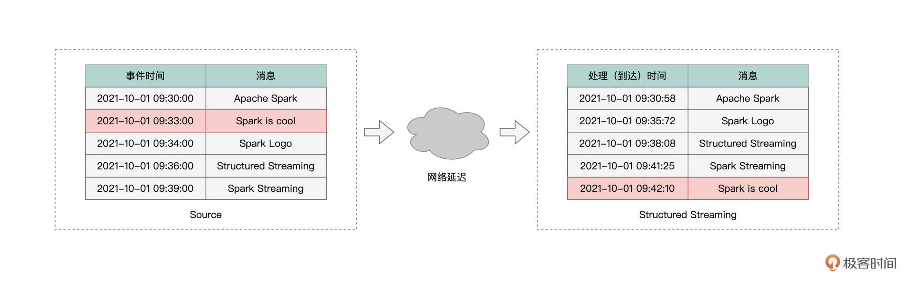
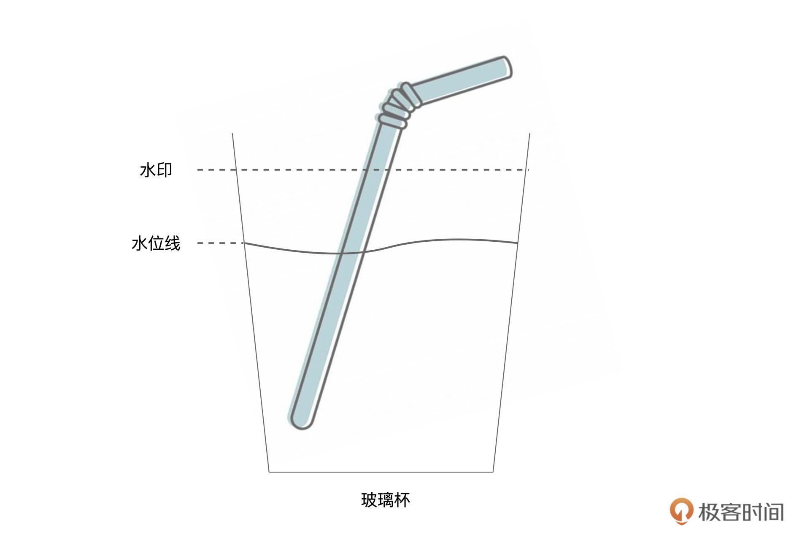
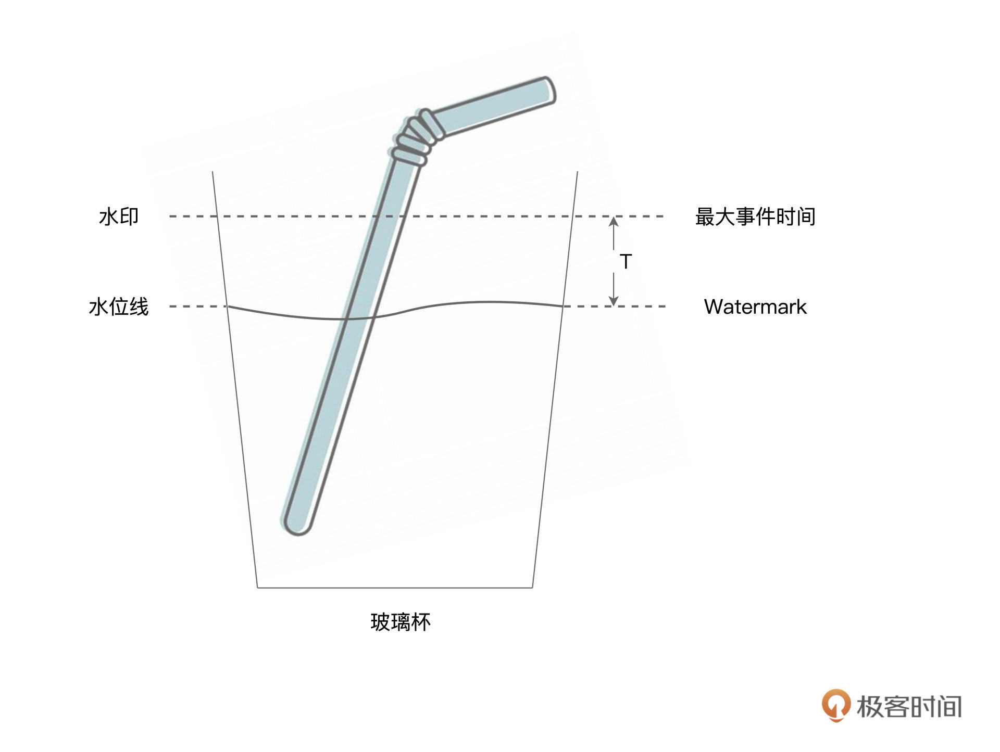
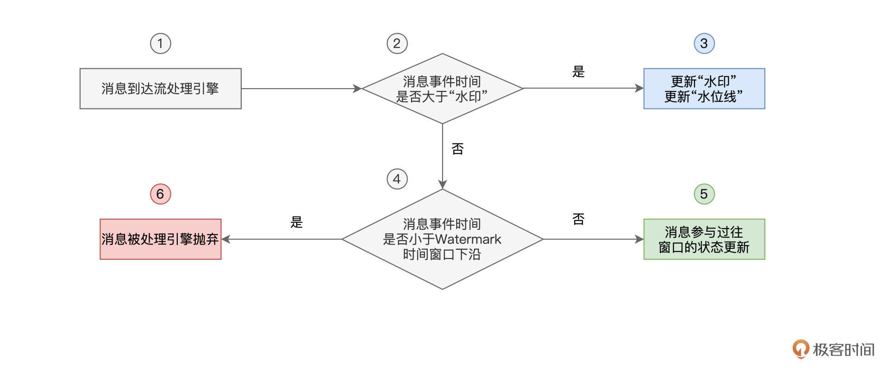
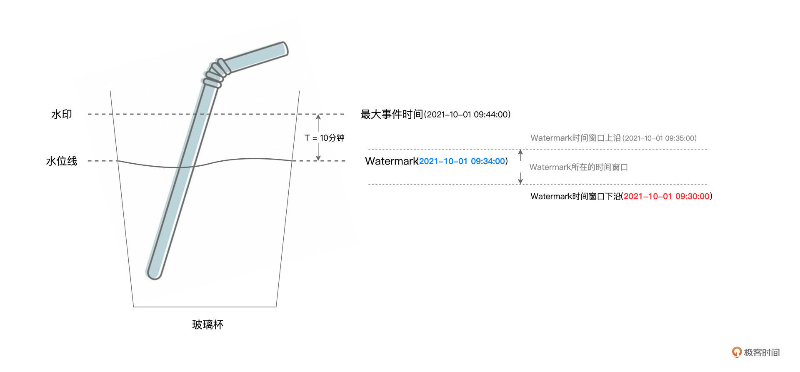
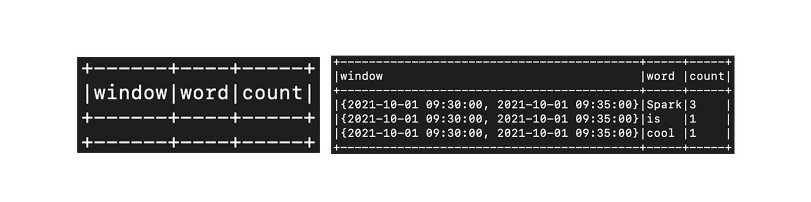

- 00 开篇词 入门Spark，你需要学会“三步走”.md.html
- 01 Spark：从“大数据的Hello World”开始.md.html
- 02 RDD与编程模型：延迟计算是怎么回事？.md.html
- 03 RDD常用算子（一）：RDD内部的数据转换.md.html
- 04 进程模型与分布式部署：分布式计算是怎么回事？.md.html
- 05 调度系统：如何把握分布式计算的精髓？.md.html
- 06 Shuffle管理：为什么Shuffle是性能瓶颈？.md.html
- 07 RDD常用算子（二）：Spark如何实现数据聚合？.md.html
- 08 内存管理：Spark如何使用内存？.md.html
- 09 RDD常用算子（三）：数据的准备、重分布与持久化.md.html
- 10 广播变量 & 累加器：共享变量是用来做什么的？.md.html
- 11 存储系统：数据到底都存哪儿了？.md.html
- 12 基础配置详解：哪些参数会影响应用程序稳定性？.md.html
- 13 Spark SQL：让我们从“小汽车摇号分析”开始.md.html
- 14 台前幕后：DataFrame与Spark SQL的由来.md.html
- 15 数据源与数据格式：DataFrame从何而来？.md.html
- 16 数据转换：如何在DataFrame之上做数据处理？.md.html
- 17 数据关联：不同的关联形式与实现机制该怎么选？.md.html
- 18 数据关联优化：都有哪些Join策略，开发者该如何取舍？.md.html
- 19 配置项详解：哪些参数会影响应用程序执行性能？.md.html
- 20 Hive + Spark强强联合：分布式数仓的不二之选.md.html
- 21 Spark UI（上）：如何高效地定位性能问题？.md.html
- 22 Spark UI（下）：如何高效地定位性能问题？.md.html
- 23 Spark MLlib：从“房价预测”开始.md.html
- 24 特征工程（上）：有哪些常用的特征处理函数？.md.html
- 25 特征工程（下）：有哪些常用的特征处理函数？.md.html
- 26 模型训练（上）：决策树系列算法详解.md.html
- 27 模型训练（中）：回归、分类和聚类算法详解.md.html
- 28 模型训练（下）：协同过滤与频繁项集算法详解.md.html
- 29 Spark MLlib Pipeline：高效开发机器学习应用.md.html
- 30 Structured Streaming：从“流动的Word Count”开始.md.html
- 31 新一代流处理框架：Batch mode和Continuous mode哪家强？.md.html
- 32 Window操作&Watermark：流处理引擎提供了哪些优秀机制？.md.html
- 33 流计算中的数据关联：流与流、流与批.md.html
- 34 Spark + Kafka：流计算中的“万金油”.md.html
- 用户故事 小王：保持空杯心态，不做井底之蛙.md.html
- 结束语 进入时间裂缝，持续学习.md.html
- 捐赠
32 Window操作&Watermark：流处理引擎提供了哪些优秀机制？
你好，我是吴磊。
在上一讲，我们从原理的角度出发，学习了Structured Streaming的计算模型与容错机制。深入理解这些基本原理，会帮我们开发流处理应用打下坚实的基础。
在“流动的Word Count”[那一讲]，我们演示了在Structured Streaming框架下，如何做流处理开发的一般流程。基于readStream API与writeStream API，我们可以像读写DataFrame那样，轻松地从Source获取数据流，并把处理过的数据写入Sink。
今天这一讲，咱们从功能的视角出发，继续来聊一聊Structured Streaming流处理引擎都为开发者都提供了哪些特性与能力，让你更灵活地设计并实现流处理应用。
Structured Streaming怎样坐享其成？
学习过计算模型之后，我们知道，不管是Batch mode的多个Micro-batch、多个作业的执行方式，还是Continuous mode下的一个Long running job，这些作业的执行计划，最终都会交付给Spark SQL与Spark Core付诸优化与执行。

而这，会带来两个方面的收益。一方面，凡是Spark SQL支持的开发能力，不论是丰富的DataFrame算子，还是灵活的SQL查询，Structured Streaming引擎都可以拿来即用。基于之前学过的内容，我们可以像处理普通的DataFrame那样，对基于流数据构建的DataFrame做各式各样的转换与聚合。
另一方面，既然开发入口同为DataFrame，那么流处理应用同样能够享有Spark SQL提供的“性能红利”。在Spark SQL学习模块，我们学习过Catalyst优化器与Tungsten，这两个组件会对用户代码做高度优化，从而提升应用的执行性能。
因此，就框架的功能来说，我们可以简单地概括为，Spark SQL所拥有的能力，Structured Streaming都有。不过，除了基本的数据处理能力以外，为了更好地支持流计算场景，Structured Streaming引擎还提供了一些专门针对流处理的计算能力，比如说Window操作、Watermark与延迟数据处理，等等。
Window操作
我们先来说说Window操作，它指的是，Structured Streaming引擎会基于一定的时间窗口，对数据流中的消息进行消费并处理。这是什么意思呢？首先，我们需要了解两个基本概念：Event Time和Processing Time，也即事件时间和处理时间。
所谓事件时间，它指的是消息生成的时间，比如，我们在netcat中敲入“Apache Spark”的时间戳是“2021-10-01 09:30:00”，那么这个时间，就是消息“Apache Spark”的事件时间。

而处理时间，它指的是，这个消息到达Structured Streaming引擎的时间，因此也有人把处理时间称作是到达时间（Arrival Time），也即消息到达流处理系统的时间。显然，处理时间要滞后于事件时间。
所谓Window操作，实际上就是Structured Streaming引擎基于事件时间或是处理时间，以固定间隔划定时间窗口，然后以窗口为粒度处理消息。在窗口的划分上，Structured Streaming支持两种划分方式，一种叫做Tumbling Window，另一种叫做Sliding Window。
我们可以用一句话来记住二者之间的区别，Tumbling Window划分出来的时间窗口“不重不漏”，而Sliding Window划分出来的窗口，可能会重叠、也可能会有遗漏，如下图所示。

不难发现，Sliding Window划分出来的窗口是否存在“重、漏”，取决于窗口间隔Interval与窗口大小Size之间的关系。Tumbling Window与Sliding Window并无优劣之分，完全取决于应用场景与业务需要。
干讲理论总是枯燥无趣，接下来，咱们对之前的“流动的Word Count”稍作调整，来演示Structured Streaming中的Window操作。为了让演示的过程更加清晰明了，这里我们采用Tumbling Window的划分方式，Sliding Window留给你作为课后作业。
为了完成实验，我们还是需要准备好两个终端。第一个终端用于启动spark-shell并提交流处理代码，而第二个终端用于启动netcat、输入数据流。要基于窗口去统计单词，我们仅需调整数据处理部分的代码，readStream与writeStream（Update Mode）部分的代码不需要任何改动。因此，为了聚焦Window操作的学习，我这里仅贴出了有所变动的部分。
df = df.withColumn("inputs", split($"value", ","))
// 提取事件时间
.withColumn("eventTime", element_at(col("inputs"),1).cast("timestamp"))
// 提取单词序列
.withColumn("words", split(element_at(col("inputs"),2), " "))
// 拆分单词
.withColumn("word", explode($"words"))
// 按照Tumbling Window与单词做分组
.groupBy(window(col("eventTime"), "5 minute"), col("word"))
// 统计计数
.count()
为了模拟事件时间，我们在netcat终端输入的消息，会同时包含时间戳和单词序列。两者之间以逗号分隔，而单词与单词之间，还是用空格分隔，如下表所示。

因此，对于输入数据的处理，我们首先要分别提取出时间戳和单词序列，然后再把单词序列展开为单词。接下来，我们按照时间窗口与单词做分组，这里需要我们特别关注这行代码：
// 按照Tumbling Window与单词做分组
.groupBy(window(col("eventTime"), "5 minute"), col("word"))
其中window(col(“eventTime”), “5 minute”)的含义，就是以事件时间为准，以5分钟为间隔，创建Tumbling时间窗口。显然，window函数的第一个参数，就是创建窗口所依赖的时间轴，而第二个参数，则指定了窗口大小Size。说到这里，你可能会问：“如果我想创建Sliding Window，该怎么做呢？”
其实非常简单，只需要在window函数的调用中，再添加第三个参数即可，也就是窗口间隔Interval。比如说，我们还是想创建大小为5分钟的窗口，但是使用以3分钟为间隔进行滑动的方式去创建，那么我们就可以这样来实现：window(col(“eventTime”), “5 minute”, “3 minute”)。是不是很简单？
完成基于窗口和单词的分组之后，我们就可以继续调用count来完成计数了。不难发现，代码中的大多数转换操作，实际上都是我们常见的DataFrame算子，这也印证了这讲开头说的，Structured Streaming先天优势就是能坐享其成，享有Spark SQL提供的“性能红利”。
代码准备好之后，我们就可以把它们陆续敲入到spark-shell，并等待来自netcat的数据流。切换到netcat终端，并陆续（注意，是陆续！）输入刚刚的文本内容，我们就可以在spark-shell终端看到如下的计算结果。

可以看到，与“流动的Word Count”不同，这里的统计计数，是以窗口（5分钟）为粒度的。对于每一个时间窗口来说，Structured Streaming引擎都会把事件时间落入该窗口的单词统计在内。不难推断，随着时间向前推进，已经计算过的窗口，将不会再有状态上的更新。
比方说，当引擎处理到“2021-10-01 09:39:00,Spark Streaming”这条消息（记作消息39）时，理论上，前一个窗口“{2021-10-01 09:30:00, 2021-10-01 09:35:00}”（记作窗口30-35）的状态，也就是不同单词的统计计数，应该不会再有变化。
说到这里，你可能会有这样的疑问：“那不见得啊！如果在消息39之后，引擎又接收到一条事件时间落在窗口30-35的消息，那该怎么办呢？”要回答这个问题，我们还得从Late data和Structured Streaming的Watermark机制说起。
Late data与Watermark
我们先来说Late data，所谓Late data，它指的是那些事件时间与处理时间不一致的消息。虽然听上去有点绕，但通过下面的图解，我们就能瞬间理解Late data的含义。

通常来说，消息生成的时间，与消息到达流处理引擎的时间，应该是一致的。也即先生成的消息先到达，而后生成的消息后到达，就像上图中灰色部分消息所示意的那样。
不过，在现实情况中，总会有一些消息，因为网络延迟或者这样那样的一些原因，它们的处理时间与事件时间存在着比较大的偏差。这些消息到达引擎的时间，甚至晚于那些在它们之后才生成的消息。像这样的消息，我们统称为“Late data”，如图中红色部分的消息所示。
由于有Late data的存在，流处理引擎就需要一个机制，来判定Late data的有效性，从而决定是否让晚到的消息，参与到之前窗口的计算。
就拿红色的“Spark is cool”消息来说，在它到达Structured Streaming引擎的时候，属于它的事件时间窗口“{2021-10-01 09:30:00, 2021-10-01 09:35:00}”已经关闭了。那么，在这种情况下，Structured Streaming到底要不要用消息“Spark is cool”中的单词，去更新窗口30-35的状态（单词计数）呢？
为了解决Late data的问题，Structured Streaming采用了一种叫作Watermark的机制来应对。为了让你能够更容易地理解Watermark机制的原理，在去探讨它之前，我们先来澄清两个极其相似但是又完全不同的概念：水印和水位线。
要说清楚水印和水位线，咱们不妨来做个思想实验。假设桌子上有一盒鲜牛奶、一个吸管、还有一个玻璃杯。我们把盒子开个口，把牛奶全部倒入玻璃杯，接着，把吸管插入玻璃杯，然后通过吸管喝一口新鲜美味的牛奶。好啦，实验做完了，接下来，我们用它来帮我们澄清概念。

如图所示，最开始的时候，我们把牛奶倒到水印标示出来的高度，然后用吸管喝牛奶。不过，不论我们通过吸管喝多少牛奶，水印位置的牛奶痕迹都不会消失，也就是说，水印的位置是相对固定的。而水位线则不同，我们喝得越多，水位线下降得就越快，直到把牛奶喝光，水位线降低到玻璃杯底部。
好啦，澄清了水印与水位线的概念之后，我们还需要把这两个概念与流处理中的概念对应上。毕竟，“倒牛奶”的思想实验，是用来辅助我们学习Watermark机制的。
首先，水印与水位线，对标的都是消息的事件时间。水印相当于系统当前接收到的所有消息中最大的事件时间。而水位线指的是水印对应的事件时间，减去用户设置的容忍值。为了叙述方便，我们把这个容忍值记作T。在Structured Streaming中，我们把水位线对应的事件时间，称作Watermark，如下图所示。

显然，在流处理引擎不停地接收消息的过程中，水印与水位线也会相应地跟着变化。这个过程，跟我们刚刚操作的“倒牛奶、喝牛奶”的过程很像。每当新到消息的事件时间大于当前水印的时候，系统就会更新水印，这就好比我们往玻璃杯里倒牛奶，一直倒到最大事件时间的位置。然后，我们用吸管喝牛奶，吸掉深度为T的牛奶，让水位线下降到Watermark的位置。
把不同的概念关联上之后，接下来，我们来正式地介绍Structured Streaming的Watermark机制。我们刚刚说过，Watermark机制是用来决定，哪些Late data可以参与过往窗口状态的更新，而哪些Late data则惨遭抛弃。
如果用文字去解释Watermark机制，很容易把人说得云里雾里，因此，咱们不妨用一张流程图，来阐释这个过程。

可以看到，当有新消息到达系统后，Structured Streaming首先判断它的事件时间，是否大于水印。如果事件时间大于水印的话，Watermark机制则相应地更新水印与水位线，也就是最大事件时间与Watermark。
相反，假设新到消息的事件时间在当前水印以下，那么系统进一步判断消息的事件时间与“Watermark时间窗口下沿”的关系。所谓“Watermark时间窗口下沿”，它指的是Watermark所属时间窗口的起始时间。
咱们来举例说明，假设Watermark为“2021-10-01 09:34:00”，且事件时间窗口大小为5分钟，那么，Watermark所在时间窗口就是[“2021-10-01 09:30:00”，“2021-10-01 09:35:00”]，也即窗口30-35。这个时候，“Watermark时间窗口下沿”，就是窗口30-35的起始时间，也就是“2021-10-01 09:30:00”，如下图所示。

对于最新到达的消息，如果其事件时间大于“Watermark时间窗口下沿”，则消息可以参与过往窗口的状态更新，否则，消息将被系统抛弃，不再参与计算。换句话说，凡是事件时间小于“Watermark时间窗口下沿”的消息，系统都认为这样的消息来得太迟了，没有资格再去更新以往计算过的窗口。
不难发现，在这个过程中，延迟容忍度T是Watermark机制中的决定性因素，它决定了“多迟”的消息可以被系统容忍并接受。那么问题来了，既然T是由用户设定的，那么用户通过什么途径来设定这个T呢？再者，在Structured Streaming的开发框架下，Watermark机制要如何生效呢？
其实，要开启Watermark机制、并设置容忍度T，我们只需一行代码即可搞定。接下来，我们就以刚刚“带窗口的流动Word Count”为例，演示并说明Watermark机制的具体用法。
df = df.withColumn("inputs", split($"value", ","))
// 提取事件时间
.withColumn("eventTime", element_at(col("inputs"),1).cast("timestamp"))
// 提取单词序列
.withColumn("words", split(element_at(col("inputs"),2), " "))
// 拆分单词
.withColumn("word", explode($"words"))
// 启用Watermark机制，指定容忍度T为10分钟
.withWatermark("eventTime", "10 minute")
// 按照Tumbling Window与单词做分组
.groupBy(window(col("eventTime"), "5 minute"), col("word"))
// 统计计数
.count()
可以看到，除了“.withWatermark(“eventTime”, “10 minute”)”这一句代码，其他部分与“带窗口的流动Word Count”都是一样的。这里我们用withWatermark函数来启用Watermark机制，该函数有两个参数，第一个参数是事件时间，而第二个参数就是由用户指定的容忍度T。
为了演示Watermark机制产生的效果，接下来，咱们对netcat输入的数据流做一些调整，如下表所示。注意，消息7“Test Test”和消息8“Spark is cool”都是Late data。

基于我们刚刚对于Watermark机制的分析，在容忍度T为10分钟的情况下，Late data消息8“Spark is cool”会被系统接受并消费，而消息7“Test Test”则将惨遭抛弃。你不妨先花点时间，自行推断出这一结论，然后再来看后面的结果演示。

上图中，左侧是输入消息7“Test Test”时spark-shell端的输出，可以看到，消息7被系统丢弃，没能参与计算。而右侧是消息8“Spark is cool”对应的执行结果，可以看到，“Spark”、“is”、“cool”这3个单词成功地更新了之前窗口30-35的状态（注意这里的“Spark”计数为3，而不是1）。
重点回顾
好啦，今天的内容，到这里就讲完了，我们一起来做个总结。首先，我们需要知道，在数据处理方面，Structured Streaming完全可以复用Spark SQL现有的功能与性能优势。因此，开发者完全可以“坐享其成”，使用DataFrame算子或是SQL语句，来完成流数据的处理。
再者，我们需要特别关注并掌握Structured Streaming的Window操作与Watermark机制。Structured Streaming支持两类窗口，一个是“不重不漏”的Tumbling Window，另一个是“可重可漏”的Sliding Window。二者并无高下之分，作为开发者，我们可以使用window函数，结合事件时间、窗口大小、窗口间隔等多个参数，来灵活地在两种窗口之间进行取舍。
对于Late data的处理，Structured Streaming使用Watermark机制来决定其是否参与过往窗口的计算与更新。关于Watermark机制的工作原理，我把它整理到了下面的流程图中，供你随时查看。
每课一练
- 请你结合Tumbling Window的代码，把Tumbling Window改为Sliding Window。-
- 对于Watermark机制中的示例，请你分析一下，为什么消息8“Spark is cool”会被系统接受并处理，而消息7“Test Test”却惨遭抛弃？
欢迎你在留言区跟我交流讨论，也推荐你把这一讲分享给更多同事、朋友。
© 2019 - 2023 Liangliang Lee. Powered by gin and hexo-theme-book.